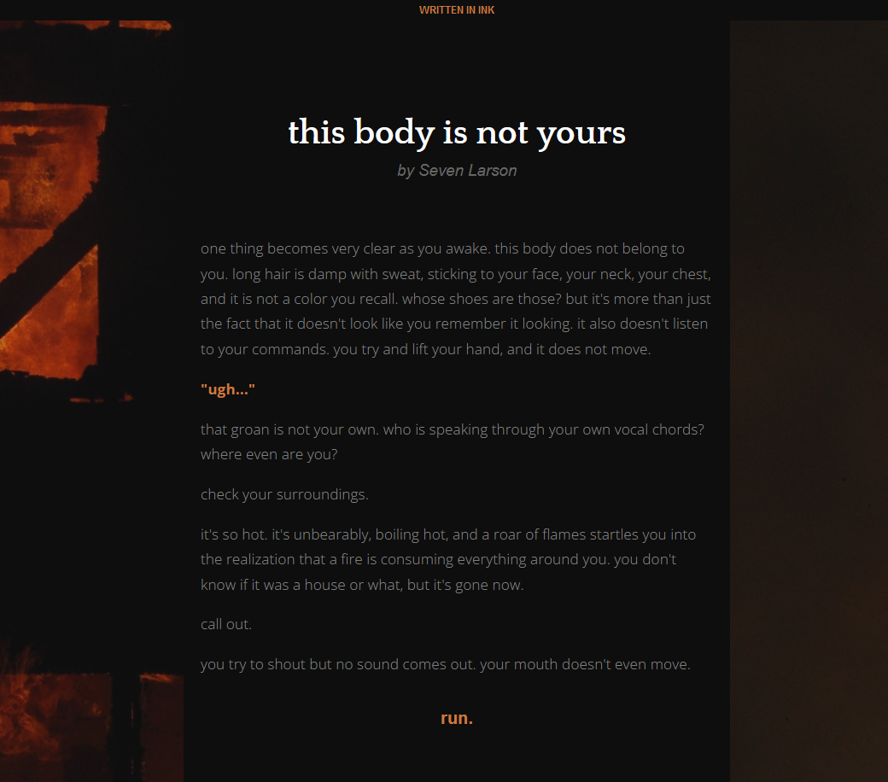
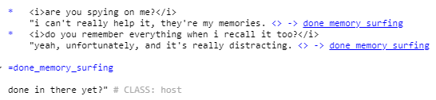

tbiny devlog #2
aug 21 2023 @ near midnight
i should have been at work today, but i woke up with a horrible migraine, so instead, i called out and slept in. when i woke up, the migraine was still pretty bad, not in a state to go to work (aura makes me partially blind), but i really wanted to finish setting up my blog and revamping my website, so i did that. don't look at my commit history, it's a mess. don't migraine & code, kids.
today i want to get into a little bit about what the story of this game will be, its inspirations, etc. since it's an idea i've had floating around for awhile, so that's what we'll jump into! many eons ago, i got really interested in the concept of a ghost or spirit that lives in the body of or is otherwise attached to another person. this isn't a unique idea of course, it's been done in a lot of media. the thing that originally drew me to the idea was the chronicles of darkness book, geist: the sin eaters, but a lot of other media i've loved over the years has explored similar ideas in different ways, particularly the blackwell series by wadjet eye games.
i made characters based on this concept, but really wanted to incorporate this idea of a host being the main character, and transgender, and the spirit not knowing how to grapple with that, or something along those lines. in the end i don't think it works well that way, or at least, it's not as interesting. i think there's a lot more room for trans allegory in the spirit being the main character, and being trapped within the body, and having to cope with it being a different body than the one they came from. i want to explore things like gender and mental health through that super cool urban fantasy lense i've always grown up being attracted to, and what better way to do it than through this story!
so that's where our story starts. "this body is not yours" is the working title, i don't know if that will be the finished title, but that's what i'm going with for now. you play as a ghost who, in the afterlife, made a deal with a dying person to bring them back to life on the condition that you're bound to them now. and when you wake up, you don't immediately remember that, because memories are a little weird when you don't have a body for a long time. don't think about it too hard, it's better for the narrative if you learn things slowly, i think.
it'll make sense. maybe.
so on to day two of development. first, i learned some more basics of conditional statements and how to edit sentences partway through using them for quality of reading, basically. i think that will come in handy later.
next, that CSS thing from yesterday was really starting to bug me, and with some caffeine for my migraine and the powers of google and way too much time, i was able to thankfully figure out a solution. it turns out i just need to only be exporting the story.js once i have the CSS styling the way i want. oops!
with that in mind, i went ahead and did some more serious CSS styling, so now the game is nice and moody and has an appropriate light and dark theme :) i usually use light theme for everything, because my eyes suck, but i know most people prefer dark theme and it fits the setting, so here's what it looks like now.
a screenshot a new dark theme. the main body of the game is black, with the orange glow of a building burning in the background
also, i commented out something i want to use later, but left it there so i can use it... later
a screenshot of a comment in inky that reads "{not_person: "this only gets said if the host thinks you're not a person! this is a test!"}"
it's a surprise tool that will help us later!
i also found out i can use ink's class defining to define lines that i stitched together through scenes using glue (this all sounds ridiculous if you're not familiar with ink, but knots, stitches, and glue are all real terms) so i can change the color of what appears to be a single line in the game, even if it's split into a couple segments in the file. very useful!
a screenshot showing off some lines glued together and given the class "host"
behold! colors.
this is pretty much it for technical stuff today i think, the rest is just writing! so... this has been a devlog. tune in next time for god knows what!